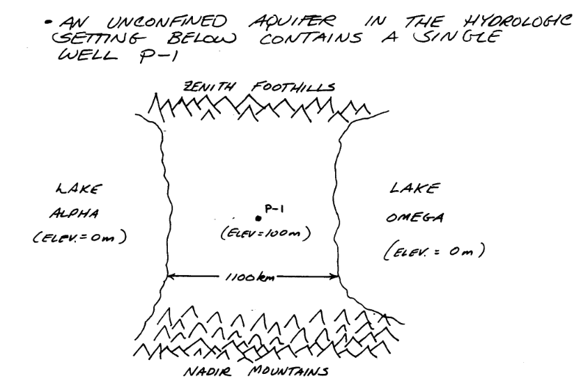
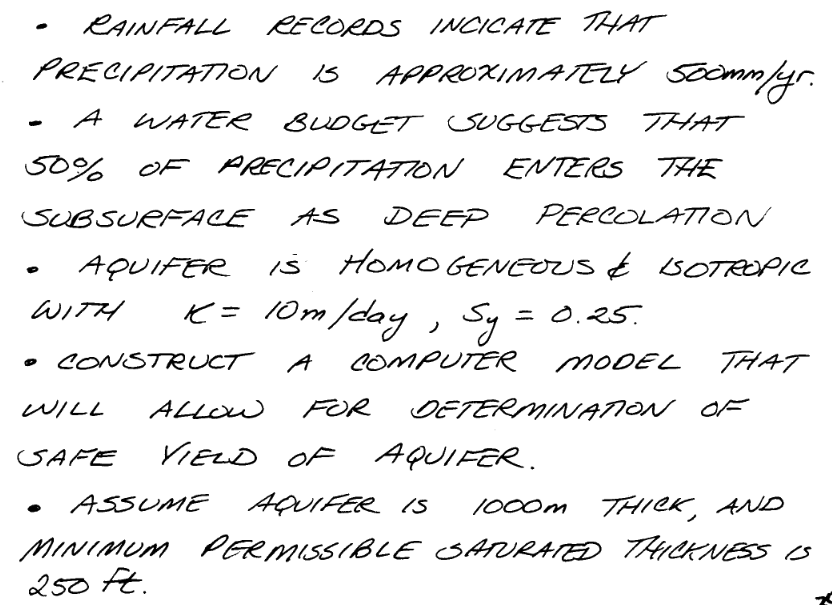

Steady Flow, Single Layer Aquifer#
Note
This section was orginally a worked example using FLOPY and MODFLOW6 installed on a aarch-64 computer. x86-... architectures should use the ! get-modflow method to download (in near real time) current binaries. Modifications to the notes were made to get it to run natively on AWS:::
Obleo Aquifer Example#
This is a steady-state model of the Obleo aquifer system depicted below:

Sone added information about the system is:

The general goals for the analysis are:

So with a little infomration regarding how we will manage elevations we can move forward with the modeling effort.

Now onto modflow
Warning
Nearly every cell throws a deprecation warning, that filterwarnings(‘ignore’) fails to suppress. Code seems to still run on my server, but over time as new updates are added to the kernel the code at some point will fail without addressing the warning. The development computer is aarch64 an arm processor. The AWS server is amd64/intel architecture, which gets a lot of code development so should stay current longer. This continuous integration CI and push changes model of modern IT support is phenomenally annoying, but for time being have to get used to it.
%reset -f
import warnings
warnings.filterwarnings('ignore',category=DeprecationWarning)
import warnings
warnings.filterwarnings('ignore')
import os
import numpy as np
import matplotlib.pyplot as plt
import flopy
# Workspace and Executibles
#binary = "/home/sensei/ce-4363-webroot/ModflowExperimental/mf6-arm/mf6" # location on MY computer of the compiled modflow program
#workarea = "/home/sensei/ce-4363-webroot/ModflowExperimental/mf6-arm/example_2" # location on MY computer to store files this example (directory must already exist)
binary = "/home/sensei/mfplayground/modflow-python/mf6.4.1_linux/bin/mf6" # location on AWS computer of the compiled modflow program
workarea = "/home/sensei/ce-5364-webroot/mfexperiments/example_1" # location on MY computer to store files this example (directory must already exist)
# Set Simulation Name
name = "example02_obleo"
##### FLOPY Build simulation framework ####
sim = flopy.mf6.MFSimulation(
sim_name=name, exe_name=binary, version="mf6", sim_ws=workarea
)
# Set Time Structure
Time_Units="YEARS"
##### FLOPY Build time framework ##########
tdis = flopy.mf6.ModflowTdis(
sim, pname="tdis", time_units=Time_Units, nper=1, perioddata=[(1.0, 1, 1.0)]
)
# Set Iterative Model Solution (choose solver parameters)
# about IMS see: https://water.usgs.gov/nrp/gwsoftware/ModelMuse/Help/sms_sparse_matrix_solution_pac.htm
# using defaults see: https://flopy.readthedocs.io/en/3.3.2/source/flopy.mf6.modflow.mfims.html
##### FLOPY Build IMS framework ###########
ims = flopy.mf6.ModflowIms(sim, pname="ims", complexity="SIMPLE")
# Set Model Name (using same base name as the simulation)
model_nam_file = "{}.nam".format(name)
##### FLOPY Build Model Name framework ####
gwf = flopy.mf6.ModflowGwf(sim, modelname=name, model_nam_file=model_nam_file)
# Define The Grid
Nlay = 1 #number layers
Nrow = 11 #number rows
Ncol = 11 #number columns
# Define distances and elevations
delrow = 1000 # cell size along columns (how tall is a row)
delcol = 1000 # cell size along row (how wide is a column)
topelev = 100.0 # elevation of top of aquifer
thick = 1000.0 #aquifer thickness
bot = [topelev-thick] # bot is a list with Nlay entries
#print(bot)
##### FLOPY Build Model Grid framework #####
dis = flopy.mf6.ModflowGwfdis(gwf,nlay=Nlay,nrow=Nrow,ncol=Ncol,delr=delrow,delc=delcol,top=topelev,botm=bot,
)
# Define initial conditions
h1 = 0.0 #
start = h1 * np.ones((Nlay, Nrow, Ncol)) # start heads are h1 everywhere
##### FLOPY Build Initial Conditions framework ###
ic = flopy.mf6.ModflowGwfic(gwf, pname="ic", strt=start)
# Define hydraulic conductivity arrays
K = 3650.0
k = K * np.ones((Nlay, Nrow, Ncol)) # Hydraulic conductivity is K everywhere
# Use above to build layer-by-layer spatial varying K
# need to read: to deal with Kx!=Ky
##### FLOPY Build BCF framework ######
npf = flopy.mf6.ModflowGwfnpf(gwf, icelltype=1, k=k, save_flows=True)
# setting icelltype > 0 is unconfined
# https://flopy.readthedocs.io/en/3.3.5/source/flopy.mf6.modflow.mfgwfnpf.html?highlight=icelltype#flopy.mf6.modflow.mfgwfnpf.ModflowGwfnpf.icelltype
# Define constant head boundary conditions
chd_rec = []
#h2 = 90 # Just a different value
#chd_rec.append(((0, 5, 5), h2))
# L,R,T,B constant head boundaries
for layer in range(0, Nlay):
for row in range(0, Nrow):
chd_rec.append(((layer, row, 0), h1)) #left column held at h1
chd_rec.append(((layer, row, Ncol-1), h1)) #right column held at h1
# for col in range(1,Ncol-1):
# chd_rec.append(((layer, 0, col), h1)) # top row held at h1
# chd_rec.append(((layer, Nrow-1 , col), h1)) # bottom row held at h1
##### FLOPY Build CHD framework #####
chd = flopy.mf6.ModflowGwfchd(gwf,maxbound=len(chd_rec),stress_period_data=chd_rec,save_flows=True,
)
# Define wellfields
wel_rec = []
# wel_rec.append((0, 5, 5, -0e6)) # 0 Mm3/yr - use to examine recharge only
wel_rec.append((0, 5, 5, -2114e6)) # 2,114 Mm3/yr
##### FLOPY Build Wellfields framework #####
wel = flopy.mf6.ModflowGwfwel(gwf,maxbound=len(wel_rec),stress_period_data=wel_rec,
)
# Define recharge
rech_val = 0.25 # rate as depth/year
rech_rec = rech_val * np.ones((1, Nrow, Ncol)) # set recharge top layer only
#rch = flopy.mf6.ModflowGwfrcha(gwf, maxbound=len(rech_rec),recharge=rech_rec)
rch = flopy.mf6.ModflowGwfrcha(gwf,recharge=rech_rec)
#rch = flopy.mf6.ModflowGwfrcha(gwf, recharge=rech_val) # default entry format
# something to do with stress periods
iper = 0
ra = chd.stress_period_data.get_data(key=iper)
# Create the output control (`OC`) Package
headfile = "{}.hds".format(name)
head_filerecord = [headfile]
budgetfile = "{}.cbb".format(name)
budget_filerecord = [budgetfile]
saverecord = [("HEAD", "ALL"), ("BUDGET", "ALL")]
printrecord = [("HEAD", "LAST")]
##### FLOPY Build OC framework
oc = flopy.mf6.ModflowGwfoc(
gwf,
saverecord=saverecord,
head_filerecord=head_filerecord,
budget_filerecord=budget_filerecord,
printrecord=printrecord,
)
# Write files to the directory
sim.write_simulation()
writing simulation...
writing simulation name file...
writing simulation tdis package...
writing solution package ims...
writing model example02_obleo...
writing model name file...
writing package dis...
writing package ic...
writing package npf...
writing package chd_0...
writing package wel_0...
writing package rcha_0...
writing package oc...
# Attempt to run MODFLOW this model
success, buff = sim.run_simulation()
if not success:
raise Exception("MODFLOW 6 did not terminate normally.")
FloPy is using the following executable to run the model: ../../../mfplayground/modflow-python/mf6.4.1_linux/bin/mf6
MODFLOW 6
U.S. GEOLOGICAL SURVEY MODULAR HYDROLOGIC MODEL
VERSION 6.6.1 02/10/2025
MODFLOW 6 compiled Feb 14 2025 13:39:18 with Intel(R) Fortran Intel(R) 64
Compiler Classic for applications running on Intel(R) 64, Version 2021.7.0
Build 20220726_000000
This software has been approved for release by the U.S. Geological
Survey (USGS). Although the software has been subjected to rigorous
review, the USGS reserves the right to update the software as needed
pursuant to further analysis and review. No warranty, expressed or
implied, is made by the USGS or the U.S. Government as to the
functionality of the software and related material nor shall the
fact of release constitute any such warranty. Furthermore, the
software is released on condition that neither the USGS nor the U.S.
Government shall be held liable for any damages resulting from its
authorized or unauthorized use. Also refer to the USGS Water
Resources Software User Rights Notice for complete use, copyright,
and distribution information.
MODFLOW runs in SEQUENTIAL mode
Run start date and time (yyyy/mm/dd hh:mm:ss): 2025/02/17 16:45:14
Writing simulation list file: mfsim.lst
Using Simulation name file: mfsim.nam
Solving: Stress period: 1 Time step: 1
Run end date and time (yyyy/mm/dd hh:mm:ss): 2025/02/17 16:45:14
Elapsed run time: 0.144 Seconds
Normal termination of simulation.
# now attempt to postprocess
h = gwf.output.head().get_data(kstpkper=(0, 0))
x = np.linspace(0, delrow*Ncol, Ncol)
y = np.linspace(0, delrow*Nrow, Nrow)
y = y[::-1]
vmin, vmax = -200., 100.0
contour_intervals = np.arange(-200., 0., 10.)
# ### Plot a Map of Layer 1
fig = plt.figure(figsize=(9, 9))
ax = fig.add_subplot(1, 1, 1, aspect="equal")
c = ax.contour(x, y, h[0], contour_intervals, colors="black")
plt.title("Obleo Aquifer Example 2 Head Map ")
plt.xlabel("Easting (meters)")
plt.ylabel("Northing (meters)")
plt.clabel(c, fmt="%2.1f");
Now for pretty mapping!
# ### Use the FloPy `PlotMapView()` capabilities for MODFLOW 6
fig = plt.figure(figsize=(9, 9))
ax = fig.add_subplot(1, 1, 1, aspect="equal")
ax.set_title("Obleo Aquifer Example 2 \n Head Map")
ax.set_xlabel("Easting (meters)")
ax.set_ylabel("Northing (meters)")
modelmap = flopy.plot.PlotMapView(model=gwf, ax=ax)
pa = modelmap.plot_array(h, vmin=-900, vmax=100)
quadmesh = modelmap.plot_bc("CHD")
linecollection = modelmap.plot_grid(lw=0.5, color="0.5")
contours = modelmap.contour_array(
h,
levels=contour_intervals,
colors="black",
)
ax.clabel(contours, fmt="%2.1f")
cb = plt.colorbar(pa, shrink=0.5, ax=ax)
cb.set_label(' Head (meters) ', rotation=90)
So this seems like a working model next we need to see if the heads are no less than -650 meters (the minimum allowed saturated thickness). We already have this information contained in the output object.
print("Minimum allowed is -650.0 meters")
print("Pumping at P-1 is:",wel_rec[0][3]/1e6," Mm^3/yr")
print("Minimum Head is:",round(h[0].min(),1)," meters")
if h[0].min() < -650.0:
print("Computed head is below allowed value - reduce pumpage and rerun simulation")
Minimum allowed is -650.0 meters
Pumping at P-1 is: -2114.0 Mm^3/yr
Minimum Head is: -563.4 meters